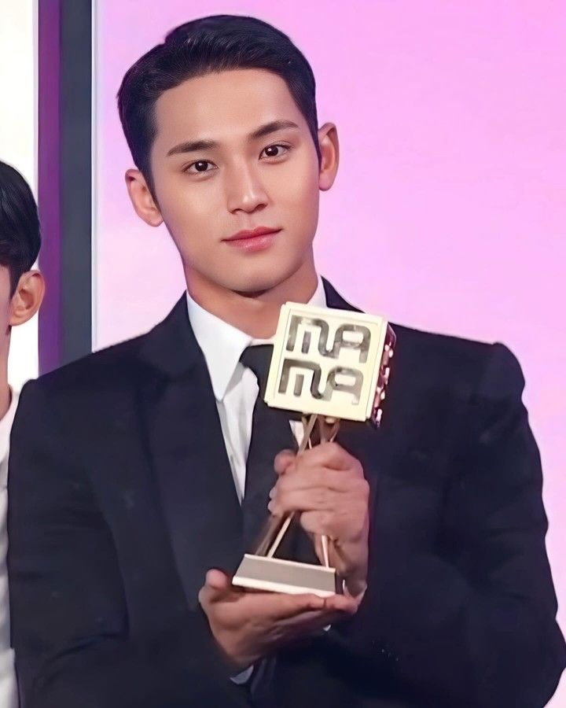

Menu
Prestasi & Penghargaan Mingyu (Bersama SEVENTEEN)

1. Penghargaan Daesang (Grand Prize)
- Mnet Asian Music Awards (MAMA) 2024
- Artist of the Year
- Album of the Year
- Worldwide Fans’ Choice Top 10
- Golden Disc Awards
- Album of the Year beberapa kali
- Asia Artist Awards
- Worldwide Fans’ Choice Top 10
- Performance of the Year
2. Kesuksesan Album & Charting
- Album SEVENTEEN sering menempati posisi #1 di Gaon Chart & Oricon Chart
- Beberapa album mereka mendapatkan sertifikasi Million Seller
- Pencapaian global dengan masuk ke Billboard 200
3. Pengaruh di Grup & Industri
- Berperan penting dalam meyakinkan semua 13 anggota SEVENTEEN untuk memperpanjang kontrak dengan Pledis Entertainment
- Aktif dalam berbagai proyek pemotretan dengan brand fashion ternama
4. Popularitas & Karisma Individu
- Sering masuk dalam daftar idola pria dengan visual terbaik
- Dipilih sebagai model untuk beberapa majalah fashion ternama seperti GQ & Vogue
Meskipun Mingyu belum mendapatkan penghargaan individu secara resmi, kontribusinya dalam SEVENTEEN sangat besar, baik dalam prestasi musik maupun dalam mempertahankan keutuhan grup.